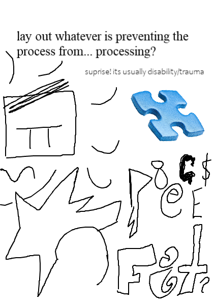
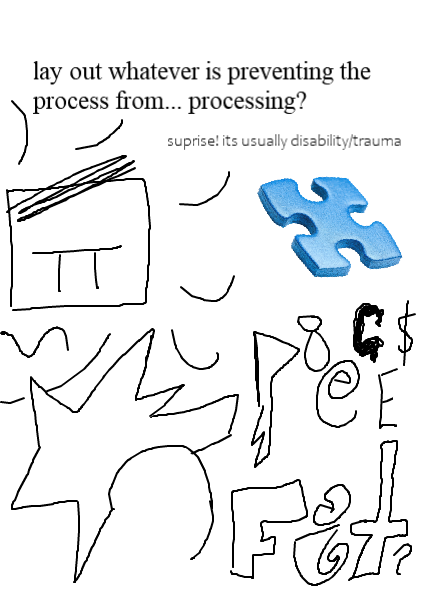

After just churning out 5 mini zines (and a website) in one day, I decided that there was no better way to process this phenomena than with another zine. It really was a phenomena because I haven't been so productive in an unremembered amount of time. After spending most of my sick day assembling this in the incredible Electric Zine Maker freeware I had come to two conclusions. The first is what I describe in the zine, something about form guiding my thought process possibly, and the other is ~disability~ but i go more into that \/ down there \/
 

The last zines were extremely low effort, several sentence pieces I squeezed onto an oragami paper booklet. I made myself use a pen (no edits) and didn't have space for complicated drawings/paragraphs of writing. There was no room to get lost trying to cover every crook and cranny of a huge concept, I had to keep it to simple ideas/sensations. They keep the process simple and immediate and very tactile, which is all so helpful Making zines includes my distant, analytical nature and gets it involved with/and transition into an emotional process.
But making standard A4 sized zines has been a touch less cathartic, and i think it relates to this interesting article i read today from the Electric Zine Maker's creator, alien melon. "The wonderful world of tools made by small teams, solo-devs, and shareware (weird, beautiful, and experimental things to be creative in + an analysis on building for approachability)" is such a good read and theres so much for me to keep delving into BUT i was reminded of the intimidation of a blank canvas/the expection of a polished product. The EZM was approachable enough that I was able to keep coming back to my original idea, with new (sometimes unrelated/cluttered) pieces, but without the care of it being good enough to anyone but me cos im playing!! it may be a bit all over the place (and occassionally undreadable) but god did i have fun makin it!